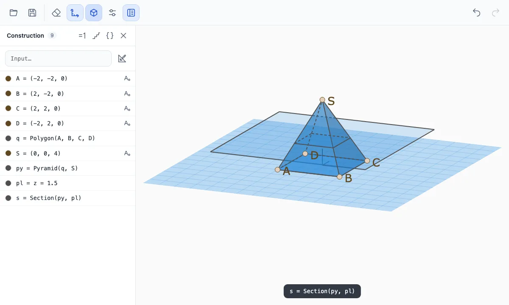

3D

Switching to 3D
- A new figure is plane. 3D view tilts the camera: the plane of the figure becomes the floor z = 0, the coordinate system a trihedron. Pressing again returns to the plane, with the previous coordinate system.
-
Returning to the plane is refused as long as an object
leaves the plane z = 0; the prompt names it.
Conversely, a plane figure refuses any object in space
(
A = (1, 2, 3), sphere…). - Each switch is an undo step.
- DGPad 3D figures, whose free points lie in the plane of the screen, do not have this button.
View
- Rotate: right button, or one finger on an empty spot. Move: left button on an empty spot. Zoom: wheel.
- P: perspective or parallel projection; S: floor. Same settings in the Figure tab.
- Hidden parts (edges, circles, lines under the floor or behind a face) are dashed.
Building
-
A click on an empty spot creates a point on the floor; with
the keyboard,
S = (0, 0, 4). - The menu gains the Planes and Solids families and two circles; the ring of a point offers the sphere.
-
Any tool that expects a plane accepts the
floor: a hidden plane
z = 0is created, then reused. -
Formulas read the three coordinates:
d(A, B)is the distance in space.
| Object | Command |
|---|---|
| Plane |
Plane(A, B, C),
Plane(A, d),
ParallelPlane(A, p),
OrthogonalPlane(A, d),
p = x + y + z = 3
|
| Perpendicular to a plane | Perpendicular(A, p) |
| Sphere |
Sphere(O, A),
Sphere(O, r)
|
| Circles |
Circle(d, P) with axis d;
Circle(O, r, d) orthogonal to the
line d or parallel to the plane d
|
| Solids |
Cylinder(A, B, r),
Cone(A, B, r),
Cube(A, B, C),
Prism(p, P),
Pyramid(p, S)
|
| Section |
Section(s, p): circle, conic or
polygon
|
| Net |
Net(c, f), f from 0 (folded) to 1
(flat)
|
| Intersections |
Intersection(d, p) point,
Intersection(p, q) line,
Intersection(s, t) circle of two
spheres
|
| Vertices | Vertex(c, k), k from 1 |
Solids
- A solid is a single object: it draws faces and edges (dashed behind) and hides what is behind it. It is designated inside its outline.
-
Cube in two clicks: two points of the same
plane or polygon give
Cube(A, B, p, ±1), on the side facing the camera; two points at the same height giveCube(A, B, 1), above (−1: below). Otherwise the tool waits for a third point. The cube becomes undefined if [AB] stops being parallel to the plane. - The Section tool takes the solid and the plane in any order.
-
A slider as the second argument of
Netanimates the unfolding:f = Slider(0, 1, 0),n = Net(c, f).